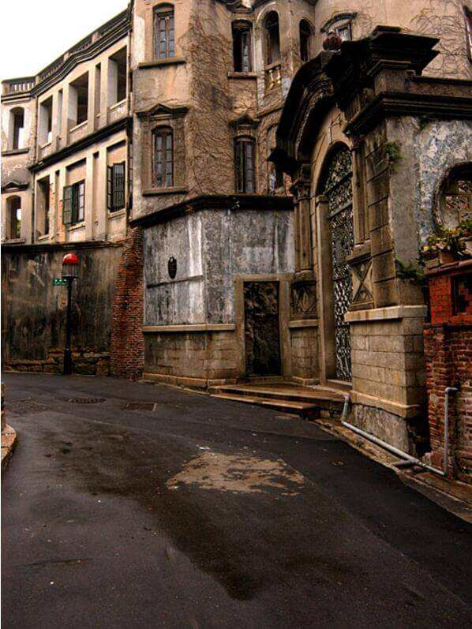
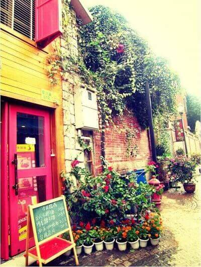

morly旅游圈
鼓浪屿简介
鼓浪屿位于福建省厦门市思明区，由于历史原因，中外风格各异的建筑物在此地被完好地汇集、保留， 有“万国建筑博览”之称。小岛还是音乐的沃土，人才辈出，钢琴拥有密度高，又得美名“钢琴之岛”、“音乐之乡”。 除环岛电动车外不允许机动车辆上岛，因此气氛幽静，在这里可以体验不同于乡村的城市宁静。
张三疯奶茶店(街心公园店)
本店特色美食:芒果冰沙 , 猫粮早餐 , 张三疯纪念品 , 张三疯锡兰红茶 , 招牌欧式奶茶 , 奶茶牛轧糖 , 香草热可可 , 招牌咖啡 , 烤香肠 , 芝士蛋糕赵小姐的店(鼓浪屿店)MISS ZHAO‘S CAKE
本店特色美食:凤梨酥 , 提拉米苏 , 功夫茶 , 柚子饼 , 素饼 , 秘制烧仙草 , 绿豆饼 , 红豆饼 , 馅饼 , 芝士蛋糕
叶氏麻糍(鼓浪屿店)
本店特色美食: 土笋冻 , 土笋冻 , 年糕 , 麻糬 , 麻糍 , 白龟 , 黑麻糍 , 花生麻糍 , 黑芝麻麻糍 , 白麻糍 , 叶氏麻兹 , 龟糕 , 糯米饺子 , 没有 , 叶氏麻糍 , 年糕 , 麦芽糖 , 芝麻麻糍 , 黑芝麻 , 黑白配寄语：
几乎每一个爱旅行的人，都有一场厦门梦。仿佛，如果没去过厦门，没吃过沙茶面，没有花一天时间在厦门的各种咖啡店里发呆，没有住过鼓浪屿，旅行的清单就不算完整。厦门有着大都市的繁华，也有着普通小城的安静自在，四季如春的气候，小清新的气质让这个城市那么的与众不同。你可以一天什么都不做，坐在一家寄明信片的小店，给未来的自己写一封信。你也可以就只是喝一杯茶，听听关于这座城市的故事...
内容整理至网络，如有侵权，请联系我们！1255394075@qq.com
 